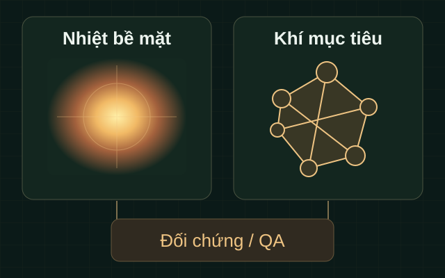

Bất thường nhiệt cần đối chiếu
Nhiệt bề mặt có thể bổ sung thông tin cho bảo trì; ý nghĩa của bất thường cần chuyên gia và dữ liệu phù hợp xác nhận.
S0064 / Kho đạn dược & nhiên liệu
Hồ sơ khả thi có truy vết cho kiểm tra nhiệt và khí. Phân biệt rõ phương pháp, điều kiện đo và hai nhánh nhiên liệu, kho đạn trước khi xem xét triển khai.
Tiền lệ dầu khí không chứng minh ứng dụng tại kho đạn hoặc năng lực GASCOLAE. Nhánh kho đạn hiện chỉ ở mức hồ sơ L1.
01 / Bài toán cần làm rõ
Các nhu cầu dưới đây là cơ sở nghiên cứu. Phạm vi và mức độ phù hợp tại từng đơn vị cần được xác nhận.
Nhiệt bề mặt có thể bổ sung thông tin cho bảo trì; ý nghĩa của bất thường cần chuyên gia và dữ liệu phù hợp xác nhận.
OGI và cảm biến tiếp xúc phải phù hợp khí cần khảo sát; camera nhiệt thường không tự xác định khí.
Tiền lệ kiểm tra bồn bằng UAV là căn cứ nghiên cứu; chưa chứng minh tính phù hợp tại cơ sở cụ thể.
Bối cảnh quan trắc môi trường kho đạn không chứng minh UAV thay thế đánh giá kỹ thuật hoặc ổn định hóa học của đạn.
02 / Phạm vi giải pháp
S0064 là ý tưởng bổ sung thông tin nhiệt bề mặt và khí theo phạm vi được duyệt. Nguồn thị trường dầu khí ghi nhận kiểm tra cơ sở, bồn và giải pháp OGI; chưa xác minh dịch vụ tương đương tại kho đạn.
L1 tạo ba hồ sơ khả thi D1–D3. L2 và L3 là lộ trình có điều kiện, cần phê duyệt riêng. Nhánh kho đạn hiện chỉ ở L1; chưa có hoạt động hiện trường hoặc năng lực GASCOLAE được xác nhận.

Phân biệt nhiệt bề mặt, ảnh khí và phép đo khí để hiểu đúng kết quả.
Dữ liệu được phép có thể bổ sung đánh giá hiện trạng sau phê duyệt.
Tách nguồn vendor, nghiên cứu và điều kiện dự án trong hồ sơ khả thi.
03 / Phương pháp & năng lực đề xuất
Thông tin dưới đây mô tả hướng nghiên cứu và điều kiện sử dụng. Chưa xem là cấu hình hoặc hiệu năng GASCOLAE đã được nghiệm thu.
Hướng tới ghi nhận bất thường nhiệt của hạng mục phù hợp; không đo nhiệt bên trong đạn hoặc tự xác định khí.
Phụ thuộc dải hấp thụ và điều kiện đo. Hình ảnh OGI không tự cung cấp nồng độ hoặc lưu lượng.
Cần nguyên lý đo, hiệu chuẩn và đối chứng phù hợp. Cảnh báo LEL không mặc nhiên là hệ đo khí chính.
Tiền lệ kiểm tra bồn hỗ trợ nghiên cứu phương pháp; không chứng minh bồn đang vận hành hay đo nhiệt–khí đồng thời.
D1–D3 tổ chức nhu cầu, nguồn, giới hạn phương pháp và điều kiện cần xác nhận.
Phạm vi chứng nhận, quyền tiếp cận và nguy cơ thực tế phải được người có thẩm quyền xem xét cho cả tổ hợp.
Giới hạn cần đọc cùng kết quả. Chứng nhận của một cảm biến không đồng nghĩa chứng nhận cho toàn bộ UAV. Hồ sơ này chưa xác nhận an toàn tại cơ sở, hiệu năng đo hoặc quyền triển khai.
04 / Tình huống sử dụng
Các tình huống là đề xuất trong tài liệu nghiên cứu. Đầu ra và quyền triển khai cần được xem xét riêng.
Hạng mục công nghiệp phù hợp và được phép cần bổ sung thông tin nhiệt cho bảo trì hoặc HSE.
Thông tin nhiệt có giới hạn, cần đối chiếu; L2/L3 chỉ sau phê duyệt riêng.
Xem xét OGI hoặc cảm biến chuyên dụng theo khí mục tiêu và điều kiện của dự án.
Ghi nhận khí và QA theo phương pháp; không suy nồng độ, lưu lượng từ ảnh.
Đề xuất đối chiếu hiện trạng hạng mục khó tiếp cận trong phạm vi được duyệt.
Báo cáo hiện trạng được phép; không mặc định giám sát bồn đang vận hành.
Chỉ xem xét hồ sơ ở L1; chưa có hoạt động tác nghiệp tại kho hoặc cơ sở để chuyển cấp.
D1–D3; không kết luận ổn định hóa học hoặc an toàn đạn.
05 / Quy trình ở mức khái niệm
Lộ trình giúp hiểu cách tổ chức hồ sơ và điều kiện chuyển bước. Đây không phải hướng dẫn vận hành hoặc bằng chứng đã triển khai.
Làm rõ mục tiêu không nhạy cảm và phân nhánh nhiên liệu hoặc kho đạn.
Xác nhận thẩm quyền, quyền dữ liệu và phạm vi bằng chứng được phép sử dụng.
Phân biệt nhiệt bề mặt, OGI, khí tiếp xúc cùng điều kiện HSE và QA.
Lập D1–D3, ghi nhận các nội dung còn mở để người có thẩm quyền xem xét.
L2/L3 cần quyết định riêng; nhánh kho đạn hiện chỉ là hồ sơ khả thi L1.
06 / Lộ trình & đầu ra
L1, L2 và L3 là lộ trình đề xuất, chưa phải các gói thương mại được phê duyệt. Mỗi bước có đầu ra và điều kiện riêng.
Hồ sơ đề xuất · Chờ duyệt
Áp dụng xem xét UC1–UC4 bằng nguồn công khai hoặc được phép. Nhánh kho đạn hiện chỉ ở cấp này; không hoạt động hiện trường.
Mục tiêu không nhạy cảm, chủ thể đặt hàng, quyền dữ liệu và phạm vi đề xuất.
Tách nhiệt bề mặt, OGI và khí tiếp xúc; ghi điều kiện an toàn, pháp lý và giới hạn chứng cứ.
Tổng hợp đánh giá có điều kiện, 12 nội dung còn mở và bằng chứng cần bổ sung.
D4 dự kiến · Chưa thực hiện
Lộ trình cho UC1–UC3 sau phê duyệt an toàn, pháp lý, dữ liệu và phương pháp riêng; nhánh kho đạn cần xem xét riêng.
Phương pháp, đối chứng, độ không đảm bảo và dữ liệu được phép theo phạm vi truy cập đã duyệt.
D5 dự kiến · Chưa thực hiện
Phụ thuộc bằng chứng L2 và hợp đồng được phê duyệt. Chưa có SLA, nhánh kho đạn chưa có cơ sở vượt L1.
Kết quả theo phạm vi hợp đồng, giới hạn kết luận và bên có trách nhiệm xem xét xử lý.
Phạm vi thương mại cần được Sales/Finance xem xét riêng. Hồ sơ hiện chưa xác nhận giá, thời hạn thực hiện hoặc SLA.
07 / Câu hỏi thường gặp
Câu trả lời theo nội dung nghiên cứu S0064. Các nội dung chưa xác minh cần người phụ trách có thẩm quyền xem xét.
Chưa. Năng lực GASCOLAE và phê duyệt dự án chưa được xác nhận. Tiền lệ thị trường dầu khí không thay thế điều kiện áp dụng tại từng cơ sở.
Ảnh nhiệt phản ánh nhiệt bề mặt. OGI là phương pháp riêng, cần dải hấp thụ phù hợp khí mục tiêu và điều kiện đo.
Không. Định lượng cần phương pháp, đối chứng và điều kiện xác nhận riêng; không suy ra con số từ hình ảnh.
Không mặc nhiên. Cảm biến có chức năng cảnh báo cần được sử dụng theo giới hạn nhà sản xuất; không tự thay phép đo rò rỉ hoặc định lượng.
Không thể kết luận như vậy. Cần xem xét phạm vi chứng nhận của cả tổ hợp, nguy cơ thực tế và giới hạn nhà sản xuất theo hồ sơ được duyệt.
Nguồn quan trắc môi trường vòng đời đạn chưa chứng minh dịch vụ UAV nhiệt–khí tương đương. L1 làm rõ tính khả thi; L2/L3 và quyền triển khai chưa được phê duyệt.
Không có biểu mẫu tiếp nhận hoặc báo giá. Tài liệu chỉ được chia sẻ qua kênh được chủ dữ liệu phê duyệt; nội dung thương mại do Sales/Finance xem xét.
08 / Trạng thái hồ sơ
12 nội dung cần xác minh còn mở. Đầu ra L1 cần được xem xét theo thẩm quyền; nhánh kho đạn chưa có cơ sở chuyển sang hoạt động hiện trường.
Trao đổi với người phụ trách dự án qua kênh nội bộ được phép. Thông tin liên hệ và kênh tiếp nhận sẽ được bổ sung sau khi hồ sơ được duyệt.
Xem lại đầu ra dự kiếnNội dung trang được biên tập từ Landing Page Content phiên bản 1.0 trong bộ tài liệu S0064; không bổ sung tuyên bố hiệu năng hoặc dự án đã thực hiện.
Phạm vi và hai nhánh: mục 1–3. Nhiệt/OGI/khí tiếp xúc: mục 5 và 11, SRC-11/SRC-15/SRC-18. Lộ trình và D1–D5: mục 7–9. Trạng thái: mục 12–15. Nguồn bên ngoài không chứng minh năng lực GASCOLAE.